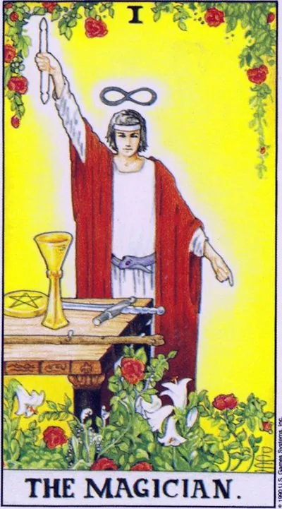

Major Arcana · I
IThe Magician
All the power is in your hands: the will, the concentration and the ability to connect the plan with the work; there comes a moment when you can, know and know exactly where to start moving towards the goal.
Archetype and core meaning
The magician stands at a table with tools of all stripes -- a wand, a cup, a sword, and a pentacle -- all available to him at the same time, one hand raised to the sky, the other lowered to the ground, the classic "up above, down" formula acting through him, is the first arcana of conscious will after innocent zero: the design that found the hands.
The card represents the moment when understanding, eloquence and determination coincide. You don't just want to, you can and you know where to start. Mercurian nature gives you the flexibility of the mind, the trading vein, the talent to translate complex into understandable. Magician is the arc of self-actualization: the world responds to someone who articulates intent and reinforces it with action.
Daily life
The day is good for negotiation, shopping, paperwork, and everything that needs to be clear and quick to think. You can do several things at once — Mercurian energy likes multitasking — but keep a list so that nothing gets lost. It's good to start learning something new or apply a skill that was idle. In the evening, re-read the message: on these days it's easy to promise too much or write to the wrong recipient.
Work and career
Direct Magic is a professional card: the project requires your competencies, and you know it. Great time for presentations, interviews, deals and defense of ideas; the negotiator reads the interlocutor with such energy and gently leads to the decision. The leader gives authority without pressure — you are listened to because they understand. Watch the temptation to turn work into a show: the focus should end with the result, not applause.
Relationships
In love, the Magician is a period of attraction when words and gestures are targeted: courtships are inventive, deep conversations, expressive pauses. The single card promises to meet a person of bright mind, often from social circle, study or work contacts. It is useful for a couple to start a common cause - from repair to an English course: joint action unites more than confessions. The shadow of the arcanum is beautiful speech without action: if the relationship is held only on them, it is time to test them with business.
Health
The card is connected to the nervous system and the conductive channels of the body: energy is invigorating, but it can be "overdry." Well, things are going well that require coordination and fine motor skills; diagnostic procedures during this period are accurate, specialists' hands are confident. Careful with caffeine, stimulants and lack of sleep - the Mercurian race drains nerves quietly.
Spiritual meaning
The way of Beth, the "home," connects Keter and Bina: the will that builds its dwelling in matter. Mercury makes the Magus the patron of the Hermetic arts, from astrology to the art of memory; his main instrument is the word spoken with force. In the ritual, the arcana corresponds to the concentration of intention before any work begins: first to collect attention in a point, then to act.
Power flows through your fingers: talent is wasted on small things, words diverge from deeds, and confidence covers the void – there may be a dexterous manipulator or his own inner imposterity.
Archetype and core meaning
The inverted Magician is the same magician, but the table is turned to the public, not to the cause. The will is scattered into a dozen small undertakings, promises outpace opportunities, and confidence masks emptiness. In the worst case, the card points to a manipulator: a person who deliberately uses trust to sell the illusion of competence, from a miracle seller to a colleague who appropriates other people's ideas.
More often, however, the arcana talks about inner imposterity: ability is there, but fear of exposure causes them to hide or simulate activity instead of activity. The simple and unpleasant way is to pick one goal and make it work, checking each statement against fact. Until that is done, any charisma is a cheap trick.
Daily life
In everyday life, there's no end to the bustle: ten things started, no completed ones, mixed records, lost time on "important" calls. You're at increased risk of cheating -- check check checks, change, subscription terms, don't be rushed. Defer major purchases and decisions: today they're made out of excitement, not necessity.
Work and career
At work, an inverted Magician is a smeared focus: meetings instead of decisions, reports instead of a product, three projects instead of one completed. The card warns of unscrupulous partners and the temptation to embellish reporting — reputation caught inaccuracy is the slowest to appreciate. There is also a crisis of competence: the task has grown, and the skill has remained the same. The honest answer is to learn or delegate, not to nod understanding.
Relationships
In relationships, the arcana points to play: misunderstandings, double lives, manipulation of guilt or jealousy as a way to keep it together. Sometimes it's just chatter -- promises of golden mountains instead of specifics that make the partner feel warm and anxious. For singles, the card advises you to test words with your hands: a brilliant storyteller is not always a reliable person.
Health
Energy is depleted through nerves: insomnia, tics, stuttering, exacerbation of chronic stress reactions are typical markers of this period. Symptoms can get confused and flash, making it difficult to diagnose: write them down so you don't confuse the doctor with blurry descriptions. Beware of self-medicating through advertising - the inverted Magician trades wonderful pills. Helps reduce stimulation: fewer screens and caffeine, more water, sleep and measured walks.
Spiritual meaning
In a spiritual sense, inverted Beth is a word detached from meaning: conspiracies without understanding, techniques without ethics, the magic of impression instead of the magic of change. The card warns of the substitution of the goal by means — collecting tools instead of one completed work. It also indicates a drain of power: promises made lightly continue to act and draw energy. The practical cure is silence and one completed ritual: small, executed precisely, restores the channel.
🌿 In brief
The main idea
If the Fool is only ready to take a step, the Magician has already decided what he wants and begins to act. The will of the Magician is not just a desire, but a desire that has been given direction, an idea that is realized, thought through, and gradually embodied in the material world, and the four elements on the table become the tools by which thought becomes action.
How it manifests
The main quality of the card is concentration. The magician does not spray on dozens of desires. His will is like the tip of a spear: there is one goal, and the energy is directed there. And that's why he's so determined, so planning, so ingenuity, and so persuasive, that a true leader of the Magician doesn't necessarily make others follow him, he's so passionate about his own idea that people around him believe in it.
In a relationship
Sorcerer is initiative, flirtation, confidence, sympathy, not just interest, but planning.
Work.
A smart, energetic professional who can find a way out of a difficult situation, and a magician who is especially good is one who needs to create something out of almost nothing: to assemble a working project from limited resources.
The shadow side
When concentration becomes excessive, the Magician becomes a person who goes ahead. Rationality becomes an attempt to control everything, leadership becomes a desire to subdue others, and resourcefulness becomes manipulation.
Feature of the school
In School of Modern Tarot, the Magician is not connected with Mercury, but with Mars and the image of Athena: thought must not only exist, but be embodied.
📜 In detail — lecture extracts
Essence of the card
The magician is the personification of the will and the conscious desire of man: the idea comes from above, he realizes it, plans and begins to implement it in the material world through the four elements on the table. The gesture "up above, then below" - the understanding that the same laws operate in the macrocosm and in the microcosm; the magician takes the higher ideas and unfolds them at our level, while it is the "manifestation of the will to release from unity with what is above": the ego separates man from God. The magician is not a finished action, the transition from thought to action, the beginning of the path (the first card after the Jester).
Upright position
- The core is the will as concentration on one clearly expressed desire ("the sharpness of a spear, not the cutting edge of a sword"):
- - Determination and willingness to act.
- Planning: The beginning of an action consists in a reasonable understanding of the action.
- Leadership: the magician does not control anyone - infects people with the brilliance of his idea, and they follow him themselves.
- - Mindfulness, reasonable approach to business, dexterity, cunning.
- The image of “Bruce Almighty”: a person has already realized that he can implement any idea, but has not yet mastered the forces completely.
- Relationships: fascination with an idea — a confident person clearly shows sympathy, flirts, wit, makes promises and believes in them; the initiative to start a relationship (including "combat Athena" is an active woman); To the question "what he thinks / is going to do something," the Magician answers: actions are planned, conscious, purposeful. A good lover is a smart lover: candles, champagne and rose petals are not accidental, everything is planned.
- Work: energetic smart specialist, enthusiast, calculating professional; leader-head who does not force, but shows how to do it; competitiveness, resourcefulness ("mastering from shit and sticks"), persuasiveness in negotiations; ideal in startups: "ideas and will in bulk - give the fourth element, money."
- Self-development: the intelligent approach is to choose schools and tools consciously, with a goal in mind; the sense of uniqueness is to develop yourself, not a template (“you don’t develop yoga, you develop yourself”); to be a creator is to put theory into practice. In the school system, the Magician refers to Mars, and Mars is the ego, “I want.”
Negative meaning
- The negative value is about as much as the direct value, and the school works with direct cards: there are always all the meanings in the card — when you squeeze it, the magician breaks; for beginners, working with inverted cards takes away responsibility.
- Manic: Concentrating on one desire turns into an obsession, a movement on the break.
- - Unrestrained uncontrolled activity, restlessness.
- Excessive rationalization: dissect every idea, go into detail – the magician “slows down”.
- The desire to subordinate others to one’s will, the denial of other people’s ideas, insensitivity to other people’s desires.
- - Negative magician -- Loki, trickster, magician, who passes off sleight of hand for real magic.
- Relationships: manipulation, obsession, rudeness (“everything pokes a stick, not seeing that it cornies your eyes”); deception and self-deception; a situation he planned that you do not like – “he brought you there in advance”; denial of intuition, incorrect calculation; treason / divorce – planned (“you do not accidentally get into the sauna”); deliberately hidden plans.
- Work: stealing someone else's idea with the impersonation of his own; fraud; boss-timid ("today forward, tomorrow back"); star disease, incorrect calculation of their own strength, irresponsible leaders; unfair competition ("corporate warriors do not bring good").
- Self-development: selfishness as the reverse side of the feeling of being chosen; inability to stop – “eat more than the stomach can hold”, grab the Tarot, runes and everything at once; mind that does not turn off; search for evidence where you just need to try yourself.
School emphases and distinctive points
- The main heresy of the school: the Magician is not Mercury, but Mars and especially Athena (Mercury only gets the transmission of an idea), not Ares with blind rage, but civilized Mars; the best image is Athena: Zeus' thought carried out in action.
- Spear vs Sword: Spear is a concentrated stabbing point (one wish), sword is a stretched cutting line.
- In the hand - a magic wand (gift, uniting the elements), not a wand: suits lie separately on the table; a square table - the material world (square = matter, triangle = spirit).
- Limniscata overhead and snake on the belt - one sign: infinity, rebirth, cycles, transition to the next level (then on the Wheel of Fortune and Force).
- Red cloak - passionate desire; white toga and bandage - purity of intentions; golden background - noble thoughts; flowers at the feet - "it's only flowers", future fruits.
- - Slavic series: Magician - Ivan Tsarevich, not a Fool (he has strength, intelligence and skill); of the heroes - Alyosha Popovich (power of wisdom); Gray wolf and lion - already the Power card.
- Modern imagery: Luke Skywalker, Neo, a politician who sits at the helm to show what he can (a magician is the opposite of an emperor).
- Magician = Magician in Negative: The Illusion of Magic instead of Real Skill.
- Advice from beloved author Hayo Banzhaf: take initiative, give way to the movement, solve and cope with problems.
- Methodology: “Tarot cards are human emotions”, the card must be felt, not only know the meaning.
Keywords
- Will · conscious desire · concentration on one goal · purpose · planning · initiative · leadership followed by · “up, down” · materialization of the idea, creator · energy of Mars / Athena · magician-trickster (negative).
- ---